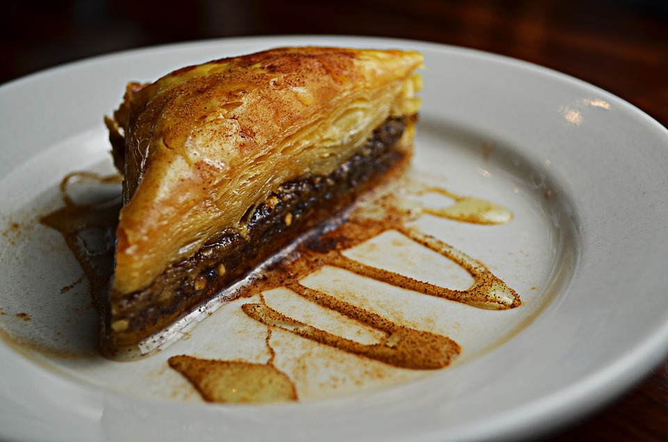

Baklava

Ingredients
- 1 Package of Filo Dough
- 1.5 cups Butter
- 2 cups finely chopped nuts of your choosing
- 3/4 cup of water
- 2 cups brown sugar
- 1/2 cup honey
- 1 Tbsp cinnamon
- 1 tsp Vanilla Extract
- 1 tsp ginger powder
Directions
- Read all directions before begining.
- Preheat the oven to 350 degrees.
- Butter chosen highwall square pan.
- Toss nuts with cinnamon ginger powder and half of the brown sugar
- Unroll Filo dough, cut whole stach to fit pan, cover with damp cloth.
- Gently lay Filo dough in pan, 2 sheets at a time, Painting generously with butter.
- Count sheets as you lay them down, adding a thin, covering layer of the nut mixture every 10 sheets.
- Finish the stack with a minnimum of 8 sheets of filo dough with no nut layer.
- Cuttting all the way to the bottom of the pan, create desired size and pattern of pieces.
- Bake for 45 minutes or until top sheets are golden in color
- While pan is baking, make sauce by simmering all additional ingredients for about 20 minutes.
- Pour thickened sauce over baklava.
- Let cool, and Enjoy!
Another take on this classic.
Contact Me
The University of Montana
32 Campus Drive
Missoula, MT 59812